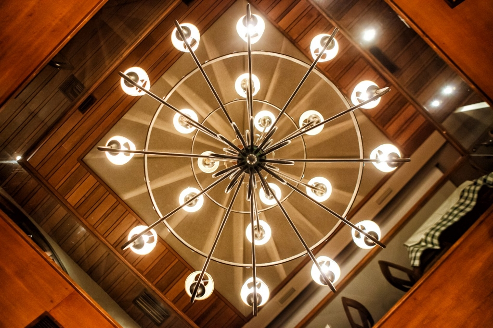

1981
Ένας δρόμος με ιστορία
Η οδός Πανδρόσου δεν είναι ένας τυχαίος δρόμος· από τον 19ο αιώνα υπήρξε το κέντρο του εμπορίου της πόλης, φιλοξενώντας τα περίφημα «αμπατζίδικα» (εργαστήρια υφασμάτων) και αργότερα τους καλύτερους τεχνίτες δερμάτινων ειδών και λαϊκής τέχνης.
Μέσα σε αυτό το ιστορικό πλαίσιο, το 1981, ανοίξαμε τις πόρτες μας: για να προσφέρουμε μια αυθεντική εμπειρία ελληνικής κουζίνας, μακριά από τον θόρυβο της πόλης αλλά ακριβώς στο κέντρο της.